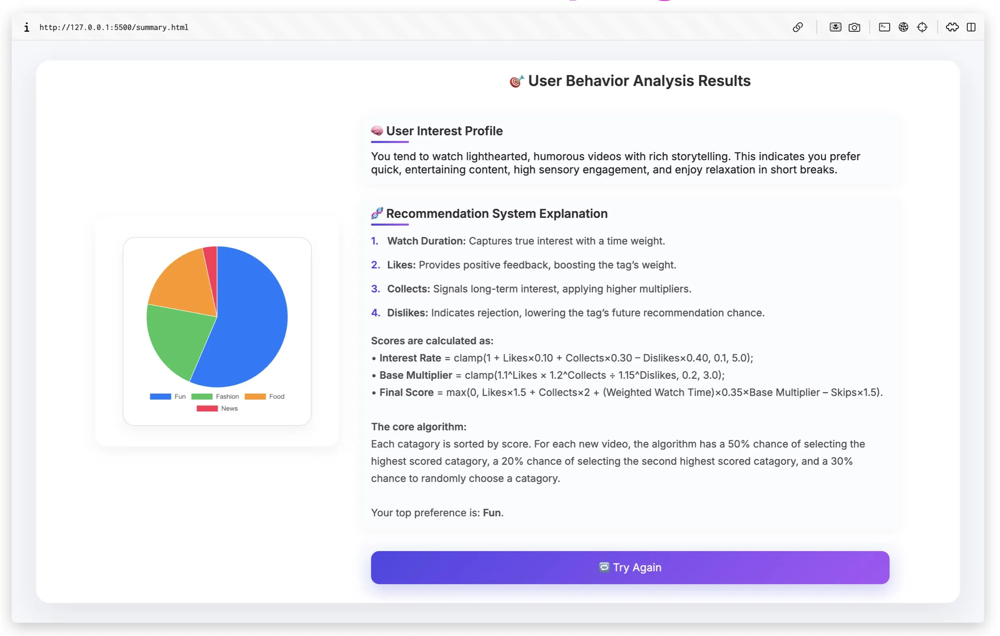

Design · Web
Information Bubbles
"Filter bubble" is a phrase that gets used so often it has stopped meaning anything. Everyone knows it exists. Fewer people have actually felt it happening, not as a concept, but as a process, unfolding click by click.
Algorithms do not delete information. They do something quieter: they surround you with what you already like, until that feels like the whole world. They offer comfort, and take away choice. I wanted to make that process visible, so I built this.
Users enter Information Bubbles and scroll through short-form videos. Every click, every skip, every moment of dwell time is logged in real time. The system adjusts its recommendations accordingly. A few minutes in, the feed looks nothing like it did at the start. At the end, the system generates an algorithmic portrait — its version of who you are, assembled entirely from your behaviour.
That moment tends to make people uncomfortable. That discomfort is the point.
Built with HTML, CSS, and vanilla JavaScript. I handled the frontend architecture, the full visual design, and was involved in the discussions around the recommendation logic.
